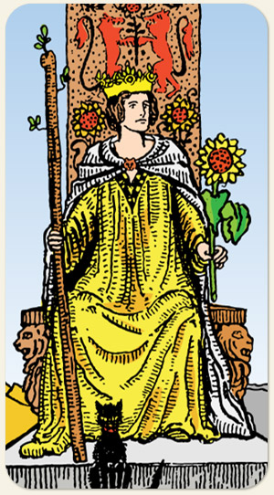

O carisma, a independência e a força da personalidade. Uma alma que domina sua própria energia criativa e a utiliza para influenciar o mundo ao redor. É a carta da mulher autoconfiante, da liderança magnética e da coragem emocional, marcando uma fase de vitalidade, determinação e a capacidade de realizar grandes feitos com alegria e autoridade.
O amor pelo fogo, o amor pelas batalhas, pelas grandes aventuras, é impetuosa, guerreira, mas ainda possui a doçura de uma rainha, traz consigo o arquétipo da bruxa por ser do naipe de energia, ou seja, manipulação de forças, ela tem muito de masculino e pouco de donzela, é adorada por seu povo.
Positivo: Forte, bonita, poderosa, sensual, atlética, ovacionada, famosa, guerreira, valente, inspirada, conectada com boas influências espirituais, realizadora.
Negativo: Água em ebulição, barraqueira, violenta, desbocada, fala de inimigos espirituais ou de pessoas que praticam magia negativa, demanda, praga, pessoas que lideram grupos de ataques, famosa de forma negativa, é temida e não admirada, brega e exagerada, tem a paciência do negativo de paus.
Símbolos: Girassol, Gato Preto, Coroa, Trono, Leão, Túnica Amarela, Manto Branco, Pirâmides, Céu Límpido
Cores: Amarelo, Vermelho, Laranjado, Verde, Branco, Cinza.
Referência: Rainha Calanthe (The Witcher).